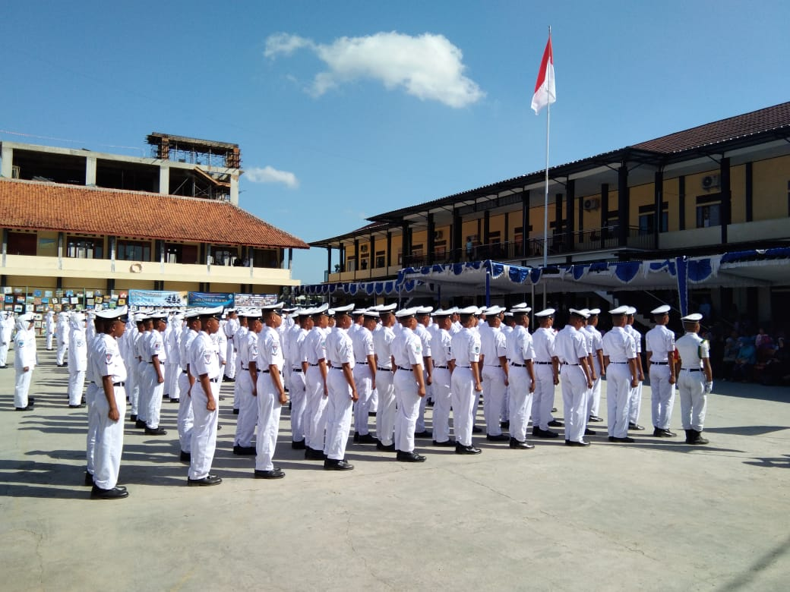

Karena jarak yang dekat kedua orang tua saya memutuskan untuk bersekolah di SD Negeri 5 Pangandaran.
Juga karena kakak kandung saya telah bersekolah di sini terlebih dahulu.
Meskipun tidak pernah juara kelas namun saya selalu berada dalam peringkat 10 besar di kelas.
Tiap tahunnya pantai selalu ramai, pada saat tahun baru, sekolah menjadi tempat berkumpul untuk menyaksikan kemeriahan kembang api bersama
Dokumentasi Sekolah
Aktifitas Siswa Siswi SD Negeri 5 Pangandaran
SMP Negeri 1 Pangandaran
Kelas Reguler
sampai
Awalnya tidak terpikirkan bahwa akan diterima di sekolah tingkat menengah ini, karena sekolah ini menjadi satu-satunya sekolah terfavorit di Kabupaten Pangandaran.
Tersedia 4 kategori kelas: Bilingual (Berbayar), Reguler (Gratis), Olahraga (Khusus untuk anak dengan kemampuan olahraga khusus), Unggulan (Bagi anak reguler dengan prestasi tinggi).
Dokumentasi Sekolah
Aktifitas Siswa Siswi SMP Negeri 1 Pangandaran
SMK Negeri 1 Pangandaran
Jurusan Rekayasa Perangkat Lunak
sampai
Sekolah yang berganti nama 3 kali ini adalah sekolah favorit di wilayah Priangan Timur, sebelumnya bernama SMK Negeri 2 Ciamis dan sebelumnya lagi bernama SMK Kelautan Pangandaran.
Terdapat berbagai jurusan di sekolah ini:
Rekayasa Perangkat Lunak (RPL)
Teknik Komputer Jaringan (TKJ)
Teknik Otomotif (TO)
Teknik Bisnis Sepeda Motor (TBSM)
Teknik Pengelolaan Hasil Penangkapan Ikan (TPHPI)
Teknik Kapal Penangkap Ikan (TKPI)
Nautika Kapal Penangkap Ikan (NKPI)
Karena tertarik dengan bidang komputer saya memilih Rekayasa Perangkat Lunak sebagai bidang keahlian dan masa depan saya nantinya. Hingga akhirnya dapat mendapatkan nilai yang sangat baik.
Dokumentasi Sekolah
Aktifitas Taruna Taruni SMK Negeri 1 Pangandaran

Riwayat Pekerjaan
CV Semesta Komputama
Admin Retur & Perbaikan
sampai
Sebagai retail yang sudah memiliki banyak cabang, kota Tasikmalaya masih menjadi pusat perdagangan perusahaan ini, dengan 3 buah toko retail dan 1 tempat pelayanan perbaikan dan pergantian suku cadang.
Planet Computer sudah sangat dikenal oleh sekolah-sekolah dan juga pelajar baik mahasiswa maupun siswa tingkat SMA/SMK sederajat.
Dengan berbagai layanan dan produk yang disediakan, CV. Semesta Komputama masih menjadi pelopor utama penjualan laptop dan printer di Priangan Timur.
Dokumentasi Tempat Bekerja
Foto toko & cabang
Gayatri Microfinance
Fullstack Web Developer
sampai
Dengan metode pembiayaan Grameentech, Gayatri mampu membiayai lebih dari 400 ribu nasabah dalam waktu 5 tahun terakhir, dengan total nilai distribusi hampir mencapai angka 1 Triliun.
Kerjasama mereka dengan BPRS BTB, BJB, Gandeng Tangan dan Investree juga tidak bisa dipandang sederhana. Besaran investasi yang disimpan pun bernilai fantastis dan tidak main-main.
Dibantu dengan penggunaan teknologi yang akurat dan cepat juga dengan adanya sumber daya manusia yang berkompeten, Gayatri mampu membuat seluruh nasabahnya memiliki nilai bayar kembali sebesar 93.9%.